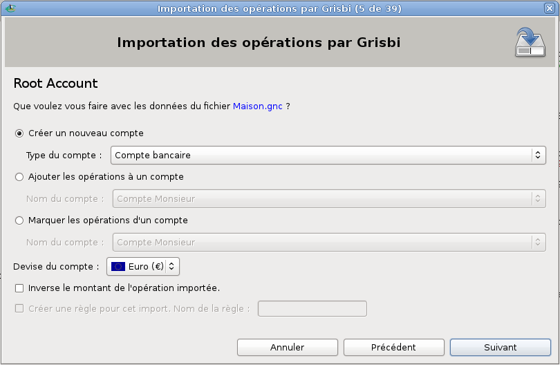
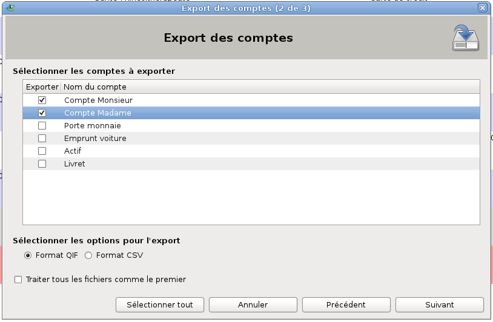

Vous ne pouvez pas utiliser directement dans Grisbi des données qui ont été créées par d’autres applications de comptabilité personnelle, et réciproquement. Comme ces applications fonctionnent différemment, leurs données sont structurées différemment: il faut donc convertir leur structure de données avant de pouvoir les utiliser.
Cette conversion ne peut pas se faire d’un seul coup sur l’ensemble des données, mais doit se faire indépendamment pour chaque compte géré par l’application. Pour convertir chacun de ces comptes, il faut donc d’une part les «exporter » de l’application d’origine, puis les «importer » dans l’application de destination.
Attention : ne pas confondre LE «fichier de comptes » qui contient toutes les données de tous les comptes créés pour la gestion d’une entité comptable (dans Grisbi, ce fichier porte l’extension .gsb), et LES «fichiers de compte », qui sont des fichiers ne contenant que les données d’un seul compte à la fois, et créés uniquement pour exporter ou importer ces données d’une application de comptabilité à une autre. Ces «fichiers de compte » doivent avoir un format de fichier (ou une extension) obligatoirement compatible avec l’application d’origine ET l’application de destination.
Grisbi supporte actuellement les formats de données de compte de comptabilité personnelle Gnucash, OFX, CSV et QIF.
Si vous voulez utiliser dans Grisbi des données de comptes qui ont été créés dans une autre application de comptabilité, vous devez d’abord exporter individuellement chacun des comptes de cette application dans un fichier, puis les importer dans Grisbi grâce à ces fichiers.
La première étape consiste, dans l’application de comptabilité personnelle d’origine, à exporter chaque compte dans un fichier au format choisi. Le format choisi doit être compatible à l’exportation par l’application d’origine et compatible à l’importation par Grisbi.
La procédure d’exportation est bien évidemment différente pour chaque logiciel, donc référez-vous à sa documentation. Si vous voulez exporter tous les comptes, vous devrez obtenir autant de fichiers que vous avez de comptes gérés par l’application.
Note : Grisbi permet d’importer un ou plusieurs fichiers de compte au cours de la même procédure. Bien que l’on puisse importer les fichiers de compte un par un, il est important de bien importer tous les fichiers de compte simultanément, afin que Grisbi puisse recréer les liens entre les comptes, particulièrement en ce qui concerne les opérations de virement.
Pour plus de renseignements sur les types de compte que Grisbi sait gérer, voir la section 7.7, Types de comptes de Grisbi.
Vous pouvez définir quelle date sera utilisée pour l’attribution d’un exercice à chaque opération importée, voir le paragraphe 22.1.3, Définition de l’exercice.
Lorsque vous importez un fichier, Grisbi vous permet d’établir une association entre une chaîne de caractères de ce fichier et un tiers. Par exemple, tous les libellés contenant «loyer » peuvent être associés à un tiers qui représente votre propriétaire. Cela doit être configuré dans le menu Édition - Préférences (voir la section 22.1.4, Associations pour l’import).
Dans le menu Fichier de Grisbi, choisissez l’option Importer un fichier, ce qui ouvre la fenêtre de l’assistant d’importation. L’importation des fichiers de compte se déroule en cinq étapes :

Figure 5.1: Paramétrage de chaque compte importé
Si, et seulement si vous venez de créer votre fichier de comptes juste avant cette importation de données de comptes, revenez à la fin de la section 3.3, Création d’un nouveau fichier de comptes. Allez juste après la fin de la procédure de création du fichier de comptes, au paragraphe commençant par D’une manière ou d’une autre… , ce qui vous proposera de créer tout de suite d’autres comptes.
Sinon, vous pouvez commencer à utiliser le compte que vous venez de créer.
Si vous voulez utiliser, dans une autre application de comptabilité, des données de compte qui ont été créées par Grisbi, vous devez d’abord exporter ces données dans des fichiers, puis les importer dans l’autre application grâce à ces fichiers. Le format de fichier choisi doit être compatible à l’exportation par Grisbi et compatible à l’importation par l’application de destination.
Dans le menu Fichier choisissez l’option Exporter vers un fichier QIF/CSV/… qui ouvre l’assistant Export des comptes. L’exportation des comptes comporte quatre étapes :

Figure 5.2: Export des comptes
Attention : d’une manière générale, il est déconseillé d’avoir des accents ou des espaces dans les noms des répertoires et fichiers utilisés par Grisbi. Si c’est le cas, renommez-les maintenant. Par exemple, les espaces peuvent être remplacées par des tirets bas (_).